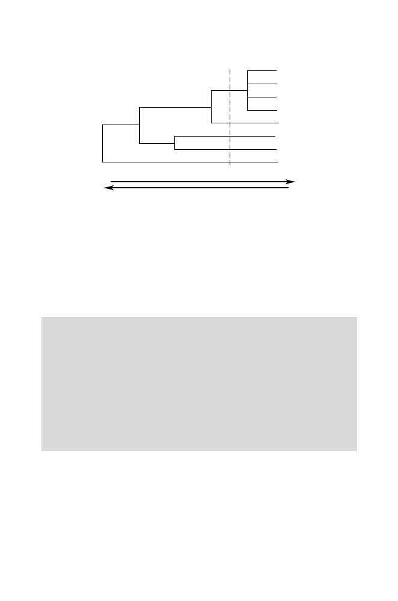

188
7 Rapid Alignment Methods:
FASTA
and
BLAST
L
L
L
L
W
L
W
I
Similarity
Distance
Fig. 7.5.
Calculating
f
ab
as a function of evolutionary distance. The dendrogram
(branching pattern) is based upon the evolutionary distance between the proteins
from which the sequences in a particular block were taken. The single-letter amino
acid codes on the right represent those amino acids present at a particular position
in the sequences constituting the sequence block. If we are concerned with recently
diverged proteins, each of the four
L
residues in the cluster at the top should be
counted separately. If the concern is with more distantly related proteins (with
distance indicated by the dotted cutoff line), then the cluster of four
L
residues
should only be counted as one instance of
L
instead of four.
Computational Example 7.2: Using BLOSUM matrices
Score the alignment
M Q L E A N A D T S V
:
:
:
L Q E Q A E A Q G E M
Using the BLOSUM62 scoring matrix (Table 7.3), we see that
S
= 2 + 5
−
3
−
4 + 4 + 0 + 4 + 0
−
2 + 0 + 1
= 7 (half-bits)
.
Now that we have seen how to obtain and use BLOSUM matrices, we
should examine Table 7.3 to make sure that the scores make biological sense.
The largest score (11 half-bits) is for conservation of tryptophan (
W
) in two
sequences. Tryptophan is a relatively rare amino acid, so there should be a
larger “reward” when it appears at corresponding positions in an alignment
of two sequences. The lowest scores are
−
4 for aligning a translational stop
*
with any other amino acid or some unfavorable alignments such as
D
opposite
L
. The low score in the latter case can be understood because aspartic acid